Visit

Ait Ben Haddou
Aït Ben Haddou is a historic ksar near Ouarzazate, famous for its traditional earthen buildings, defensive towers and beautiful architecture. Located along an ancient caravan route, it reflects the rich heritage of southern Morocco. Recognized as a UNESCO World Heritage Site in 1987
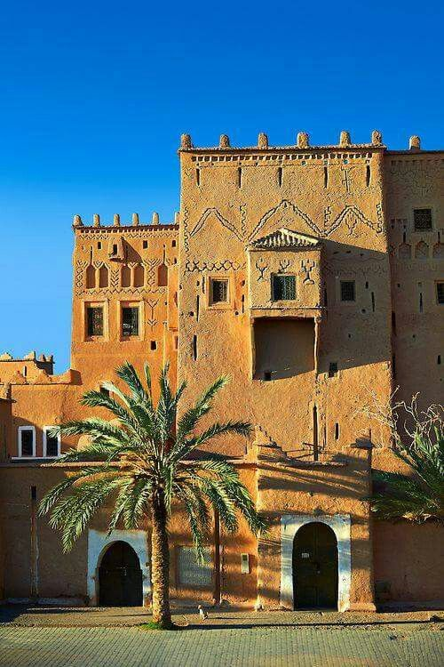
Tourirt Kasbah
Kasbah Taourirt is a historic landmark located in the heart of Ouarzazate. Built mainly from clay and earth, it is known for its traditional architecture, decorated rooms and impressive towers. Once an important residence of the Glaoui family

Atlas Studios
Atlas Studios, located near Ouarzazate, is one of the world's well-known film studios. Established in 1983, it has hosted many international film and television productions. Its large sets, desert scenery and historical recreations have helped make Ouarzazate a famous destination for cinema lovers.
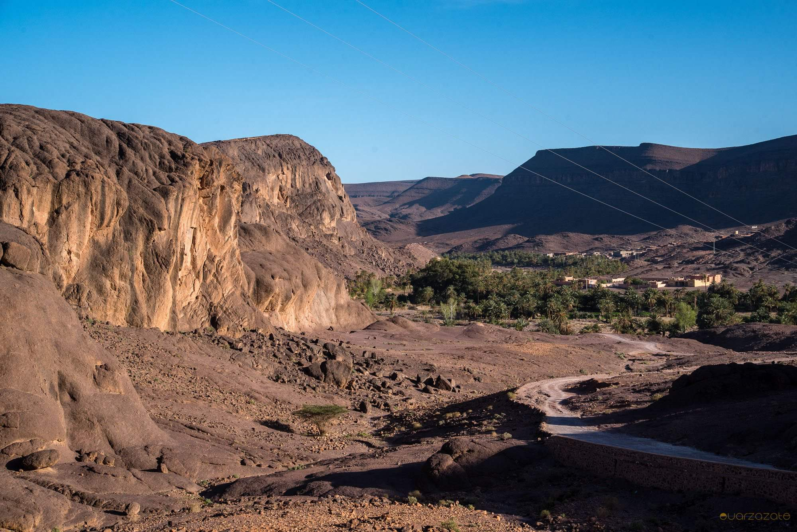
Fint Oasis
Fint Oasis is a peaceful natural destination located near Ouarzazate, surrounded by rocky mountains and green palm trees. Its traditional villages, flowing water and beautiful landscapes offer a glimpse into rural life in southern Morocco. It is an ideal place to enjoy nature, discover local traditions and escape the busy city.
Eat
Discover Moroccan and local food.
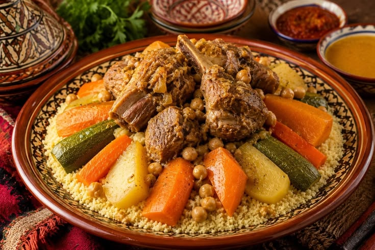
Couscous
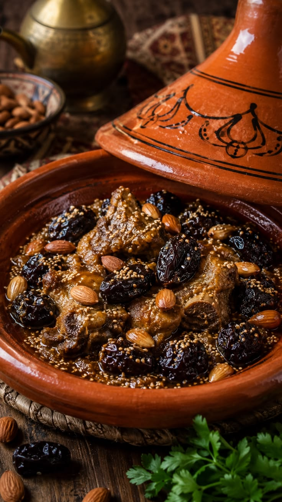
Tagine

Fried chicken
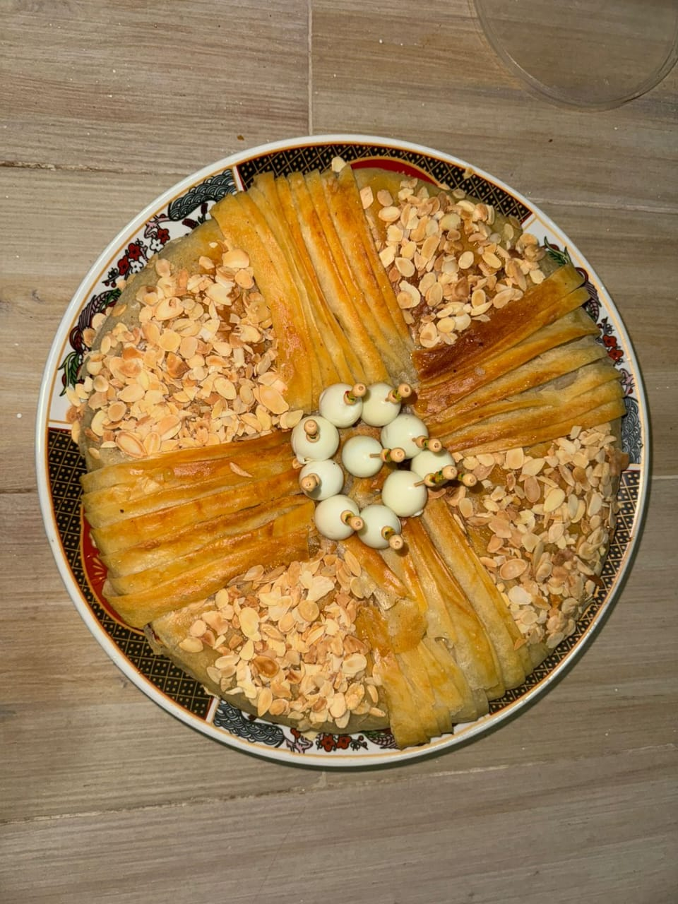
Pastilla
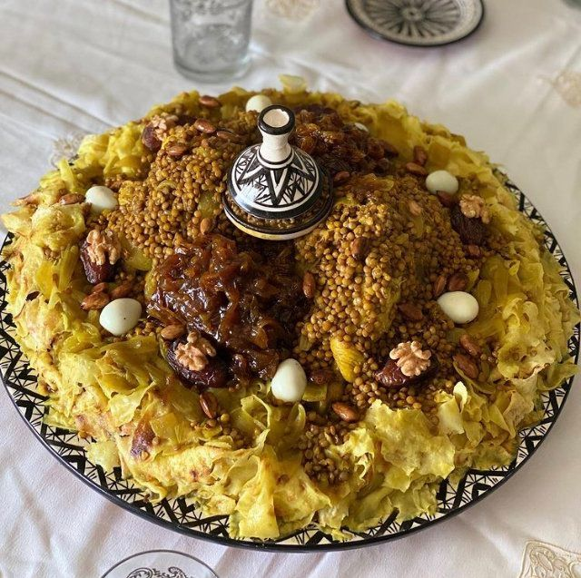
Rfissa

Moroccan Sweets
Shop
Discover local products and souvenirs.
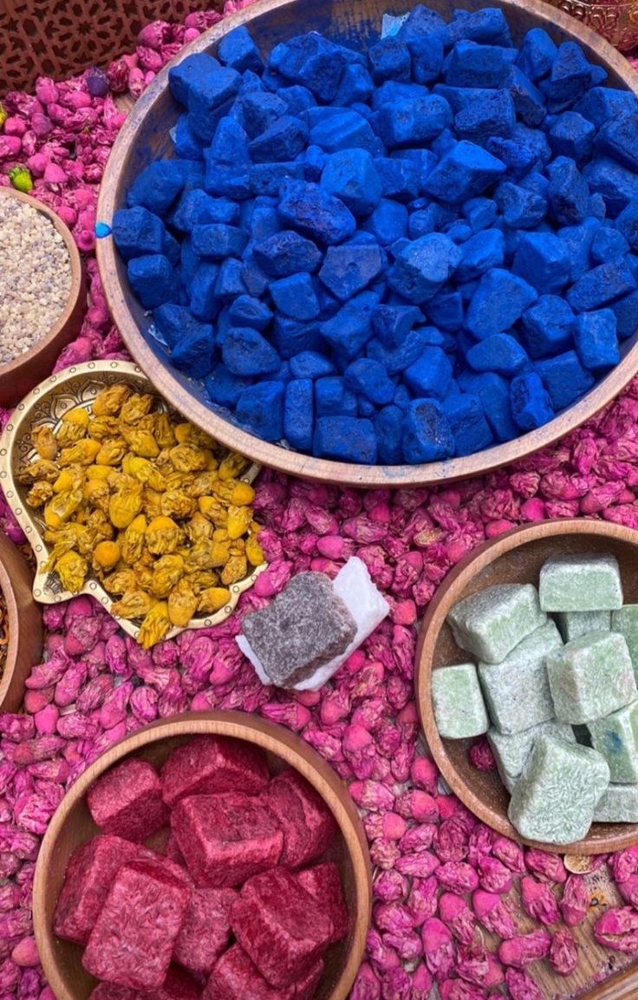
Nila
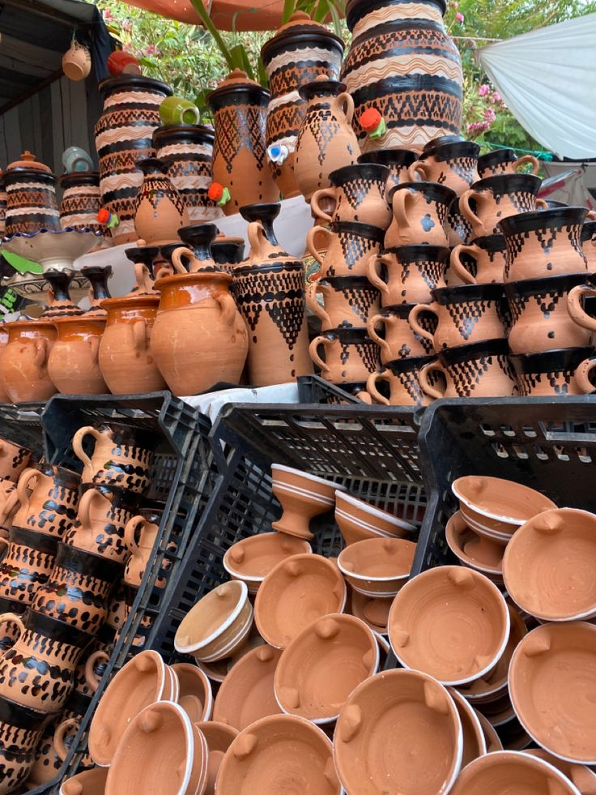
Pottery
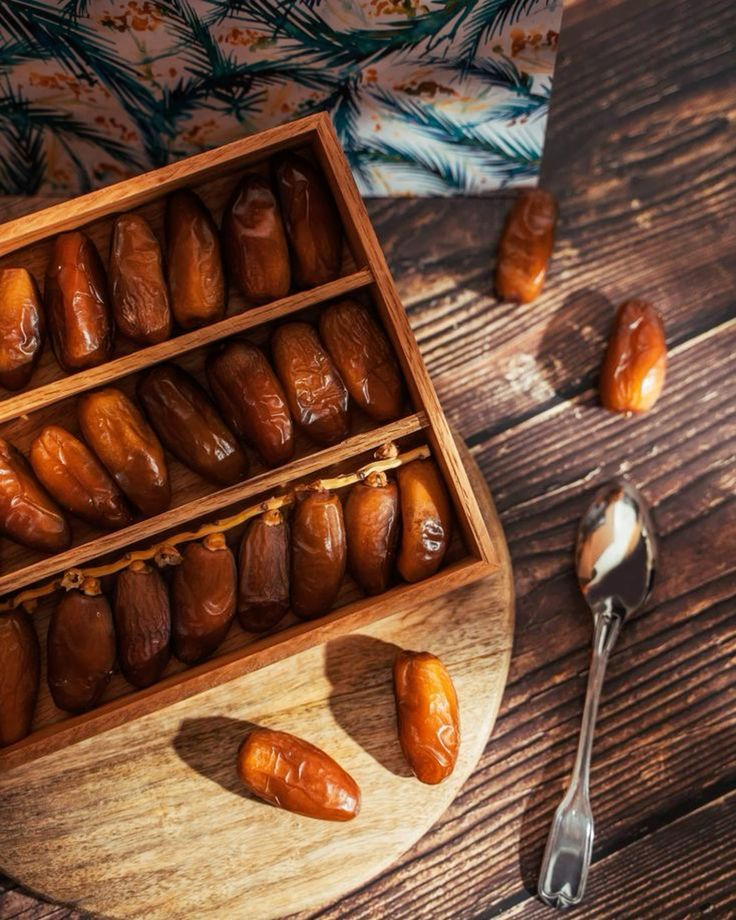
Dattes
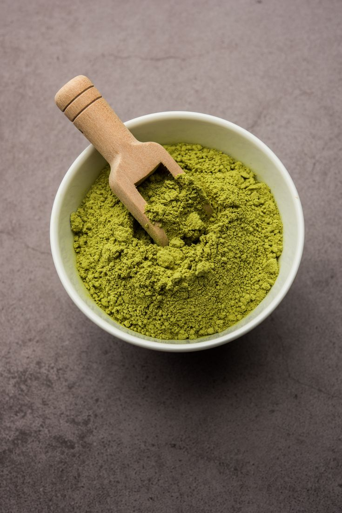
Henna
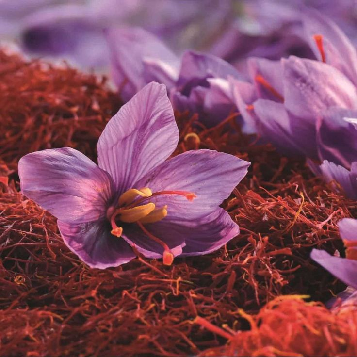
Saffron

Accessories
Outdoor Activities
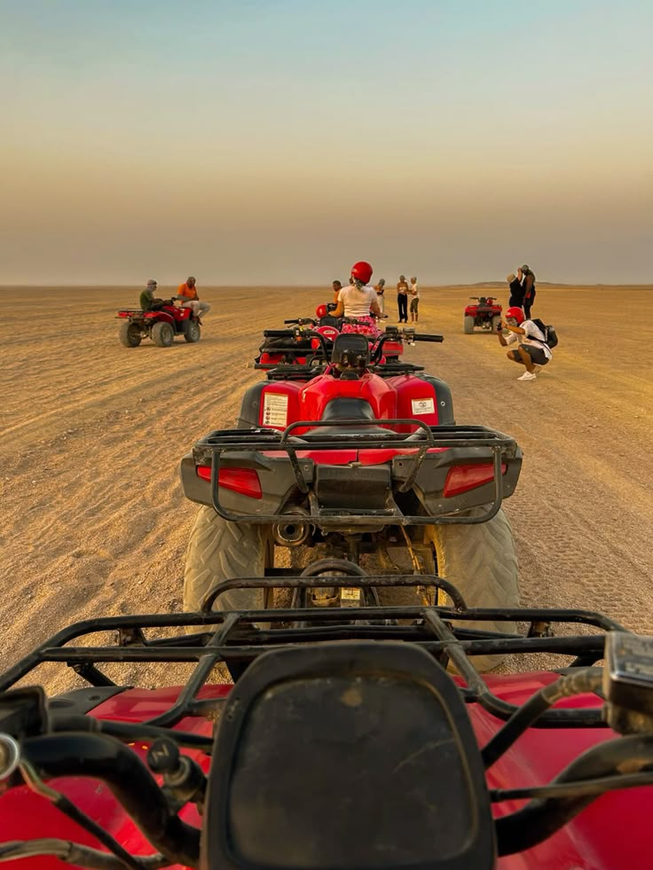
Quad Biking
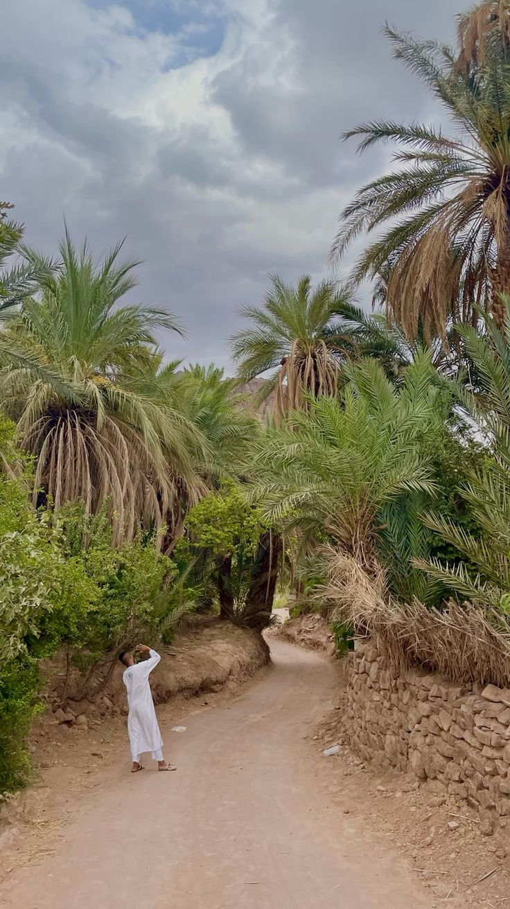
Hiking & Nature Walks
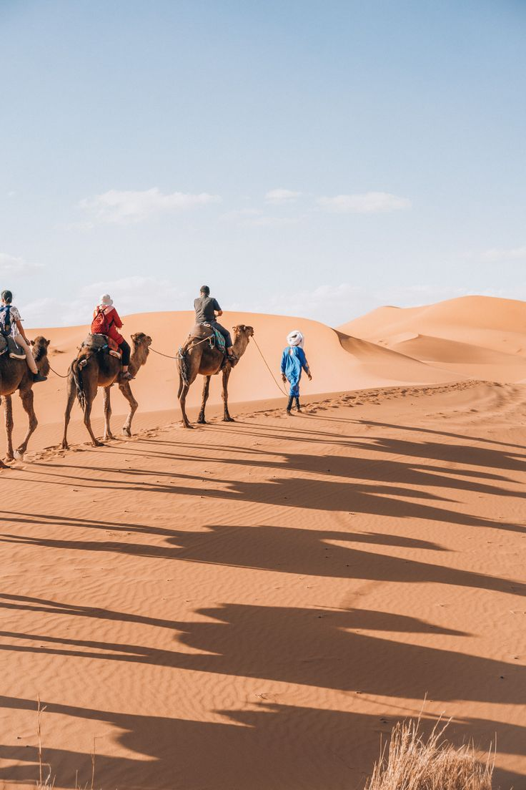
Camel Rides
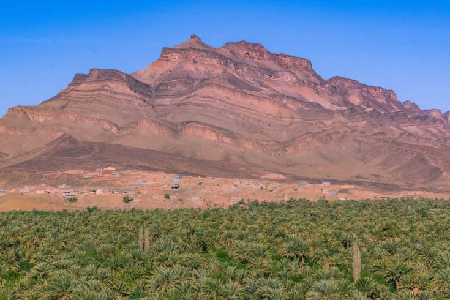
Mountain Excursions